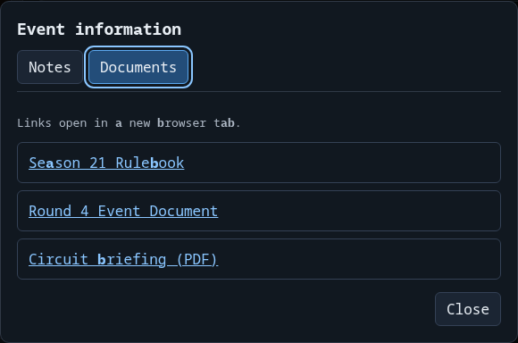
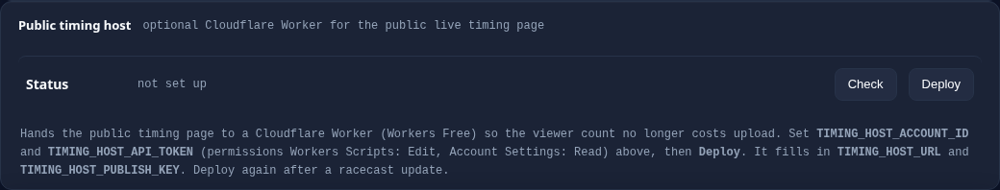

<!doctype html>
<html lang="en">
<head>
<meta charset="utf-8">
<meta name="viewport" content="width=device-width, initial-scale=1">
<link rel="icon" href="favicon.svg" type="image/svg+xml">
<link rel="apple-touch-icon" href="apple-touch-icon.png">
<title>League Admin setup · GT Racing Broadcast</title>
<link rel="stylesheet" href="vendor/reveal/dist/reveal.css">
<link rel="stylesheet" href="vendor/reveal/plugin/highlight/monokai.css">
<link rel="stylesheet" href="assets/deck.css">
</head>
<body data-role="league-admin">
<div class="reveal"><div class="slides">

<section data-markdown><script type="text/template">
<span class="role-tag">League Admin · Onboarding</span>
# League Admin setup
You own the Sheet, the crew roster and Discord login,
so producers just run the show.

Note: Welcome to the league admin onboarding. As league admin, you own the Sheet, the crew roster, and the Discord login. You do the setup once so that your producers can simply run the show.
</script></section>

<section data-markdown><script type="text/template">
## A league is a profile
Every league lives in `profiles/<name>/profile.env`. One machine can host several leagues; switching is one click.

Key fields: `SHEET_ID`, `SHEET_PUSH_URL` (the Apps Script webhook), `CONSOLE_SECRET` (auto-generated).

Hand a league to a new producer from the Control Center **Profile** view. **Export** bundles the whole profile, then **Import profile** on the target machine. *CLI: `racecast profile export` / `import`.*

The bundle carries `profile.env` with its secrets (`CONSOLE_SECRET`, `TIMING_HOST_API_TOKEN`), the overlay and, unless left out, graphics, media and brands. Treat it like a password.

More: [Profiles](https://github.com/jegr78/gt-racing-broadcast/wiki/Profiles)

Note: A league is a profile. Every league lives in its own profile dot env file, and one machine can host several leagues, with switching just one click away. The key fields are the sheet ID, the sheet push URL. Which is the Apps Script webhook, and the console secret, which is auto-generated. To hand a league to a new producer, open the Profile view in the Control Center, press Export, and then press Import profile on the target machine. The bundle carries the whole profile: the profile dot env with its secrets, such as the console secret and the timing host API token, the overlay design and, unless you leave them out, the graphics, media and brand logos. So treat the file like a password.
</script></section>

<section data-markdown><script type="text/template">
## The Sheet drives everything
The relay reads the shared Google Sheet for the stint schedule, HUD overlay, and race timer.

**Required:** deploy the **Apps Script webhook** and set `SHEET_PUSH_URL`. It is the write-back path the race-timer sync and the Director Panel's HUD / Schedule / POV / crew controls depend on.

More: [Sheet-Template](https://github.com/jegr78/gt-racing-broadcast/wiki/Sheet-Template) ·
[Sheet-Webhook](https://github.com/jegr78/gt-racing-broadcast/wiki/Sheet-Webhook)

Note: The Sheet drives everything. The relay reads your shared Google Sheet for the stint schedule, the HUD overlay, and the race timer. This part is required: deploy the Apps Script webhook and set the sheet push URL. That is the write-back path that the race-timer sync and the Director Panel's HUD, Schedule, POV and crew controls all depend on.
</script></section>

<section data-markdown><script type="text/template">
## Maintain the Crew tab


`Name | Commentator | Director | Producer | Race Control | Discord | Race Engineer`. Columns are found by header text. Each flag grants `/console` access; **Producer** includes Director, Race Control and Race Engineer.

More: [Sheet-Webhook](https://github.com/jegr78/gt-racing-broadcast/wiki/Sheet-Webhook) · [Console](https://github.com/jegr78/gt-racing-broadcast/wiki/Console#race-engineer-access)

Note: Maintain the Crew tab. Its columns are Name, Commentator, Director, Producer, Race Control, Discord, and Race Engineer, the seventh and newest one. The relay finds each column by its header text, so the order in the Sheet does not matter. Each flag grants access to the slash console launcher. Race Control opens the Race Control desk. Race Engineer opens the telemetry desk for engineers, once the producer allows it in the Telemetry view of a solo POV profile. A producer gets the director, Race Control and Race Engineer roles without extra flags. You can edit the tab by hand in the Sheet, or use the crew editor in the Control Center.
</script></section>

<section data-markdown><script type="text/template">
## Redeploy the Sheet webhook
The crew editor writes the Crew tab through the Apps Script webhook. The **Race Engineer** column needs the current script.

- In the Sheet, **Extensions → Apps Script**: replace the code with the current script from the Sheet-Webhook page.
- **Manage deployments → Edit → Version: New version → Deploy.**
- This keeps the `/exec` URL, so no `profile.env` changes on any machine. A *New deployment* would create a new URL.

More: [Sheet-Webhook](https://github.com/jegr78/gt-racing-broadcast/wiki/Sheet-Webhook#updating-the-script-later)

Note: The crew editor writes the Crew tab back through the Apps Script webhook, and the Race Engineer column needs the current version of that script. In the Sheet, open Extensions, Apps Script, and replace the code with the current script from the Sheet Webhook wiki page. Keep your own key in it. Then open Manage deployments, Edit, pick New version as the version, and press Deploy. That keeps the same exec URL, so no profile dot env changes on any machine. A new deployment instead would create a new URL that every producer has to update.
</script></section>

<section data-markdown><script type="text/template">
## Graphics from the crew: GRAPHICS_TAKE
May commentators and Race Control put broadcast graphics on air from their pages? Set `GRAPHICS_TAKE` in `profile.env`:

- `off` (default): view only.
- `request`: they ask, the director takes or declines.
- `direct`: they put graphics on air themselves.

Flag graphics stay with Race Control and go on air directly in `request` mode too. The director keeps full control and can change the mode per role live, until the relay restarts.

More: [Console: Graphics](https://github.com/jegr78/gt-racing-broadcast/wiki/Console#graphics) · [Configuration](https://github.com/jegr78/gt-racing-broadcast/wiki/Configuration)

Note: The league decides whether commentators and Race Control may put broadcast graphics on air from their own pages. Set GRAPHICS TAKE in the profile dot env. Off, the default, means view only. Request means they ask, and the director takes or declines. Direct means they put graphics on air themselves. Flag graphics belong to Race Control and go on air directly, even in request mode. The director keeps full control either way, and can change the mode per role during the event. The league value returns when the relay restarts.
</script></section>

<section data-markdown><script type="text/template">
## Configuration tab: the timing columns
One row per entry. These optional columns drive the timing tower, the driver dashboard and the public timing page:

- `Brand Key` (logo) and `Brand Name Override` (text only).
- `BG Color` / `Text Color`: the team tile colours.
- `Cup Team`: the team a driver races for in team-vs-team leagues.
- `Class` and `Class Color`: with two or more named classes every screen ranks within the class.

More: [Sheet template: Configuration tab](https://github.com/jegr78/gt-racing-broadcast/wiki/Sheet-Template#configuration-tab)

Note: The Configuration tab has one row per entry, and a few optional columns feed the timing screens. Brand Key picks the manufacturer logo, and Brand Name Override changes only the brand text, not the logo. BG Color and Text Color set the team tile colours. Cup Team names the team a driver's entry races for in team versus team leagues, shown with the row's background colour. Class and Class Color name the car class. With at least two named classes, every timing screen ranks the cars within their class.
</script></section>

<section data-markdown><script type="text/template">
## Schedule tab: lap counts
Optional columns, header mode only:

- `Laps`: the lap count of that stint lobby on GT7's counter. Only the last row counts. The driver race finishes when the leader completes it in the final lobby.
- `Laps <Class>`, e.g. `Laps GT4`: the lap count of that class. Put it in the final lobby's row.

Empty falls back to the event setting (`racecast event race --laps`).

More: [Sheet template: Schedule tab](https://github.com/jegr78/gt-racing-broadcast/wiki/Sheet-Template#schedule-tab) · [Driver telemetry: Classes](https://github.com/jegr78/gt-racing-broadcast/wiki/Driver-Telemetry#classes)

Note: The Schedule tab takes two optional lap columns, and only when the tab has a header row. Laps is the lap count of that stint lobby on GT seven's counter. Only the last row's value is used. The driver race finishes when the leader completes it in the final lobby. With classes, Laps is the count of the first class, and a column such as Laps GT4 holds the count of another class. Put it in the final lobby's row as well. An empty cell falls back to the event setting.
</script></section>

<section data-markdown><script type="text/template">
## Event Notes and Documents tabs
- **Event Notes**: `Heading | Note | Priority`. `Important` highlights a note.
- **Documents**: `Title | URL`. Public links such as the rulebook; the relay never downloads them.
- Every crew desk shows them behind one **Notes** button, in two tabs.



More: [Sheet template: Event Notes](https://github.com/jegr78/gt-racing-broadcast/wiki/Sheet-Template#event-notes-tab) · [Documents](https://github.com/jegr78/gt-racing-broadcast/wiki/Sheet-Template#documents-tab)

Note: Two optional tabs carry information for the whole crew. The Event Notes tab has a heading, the note and a priority. A priority of Important highlights the note. The Documents tab has a title and a URL per row, for public links such as the rulebook or the event document. The relay only reads the list and never downloads the documents. The Director Panel, the Commentator Cockpit, the Race Control desk and the Race Engineer desk show both behind one Notes button, in two tabs. When both lists are empty, the button hides.
</script></section>

<section data-markdown><script type="text/template">
## Brands tab: your own logos
- Optional tab `Brand | Logo`: a manufacturer name and a Google Drive share link to its logo.
- A row overrides a bundled logo (`BMW`) or adds a new one (`Cupra`).
- The producer downloads them with **Brands → Download** (or `racecast brands`) before an event.

The logos show on the HUD and next to each entry in the timing screens.

More: [League-Owner-Setup: Custom brand logos](https://github.com/jegr78/gt-racing-broadcast/wiki/League-Owner-Setup#custom-brand-logos)

Note: The optional Brands tab holds your own manufacturer logos. Each row has a manufacturer name and a Google Drive share link to the logo image. A row either overrides a bundled logo, such as BMW, or adds a new one, such as Cupra. The producer downloads them before an event with Brands, Download in the Control Center, or racecast brands. The logos show on the HUD and next to each entry in the timing screens.
</script></section>

<section data-markdown><script type="text/template">
## Hosted public timing (optional)
1. Create a Cloudflare account and set its workers.dev subdomain.
2. Create an API token with **Workers Scripts: Edit** and **Account Settings: Read**.
3. Put `TIMING_HOST_ACCOUNT_ID` and `TIMING_HOST_API_TOKEN` into the profile.
4. **Deploy** in the Profile view fills in `TIMING_HOST_URL` and `TIMING_HOST_PUBLISH_KEY`.



More: [Driver telemetry: Hosted live timing](https://github.com/jegr78/gt-racing-broadcast/wiki/Driver-Telemetry#hosted-live-timing-optional)

Note: A league can hand its public timing page to a Cloudflare Worker on the free Workers plan. Cloudflare then serves every viewer, and the viewer count no longer costs the producer upload. Set it up once per league. Create a Cloudflare account and set its workers dot dev subdomain. Create an API token with Workers Scripts Edit and Account Settings Read. Put the account id and the token into the league profile. The token travels with every profile export, so treat it like a password. Then press Deploy under Public timing host in the Profile view, or run racecast timing-host deploy. That fills in the host URL and the publish key. Use one Cloudflare account per league, because the free plan's daily request limit counts per account.
</script></section>

<section>
<section data-markdown><script type="text/template">
## Discord login for /console


**Recommended (optional)**, with it crew sign in with Discord; without it signed `racecast links` are the only way in.  ↓ how to set it up

Note: Discord login for the slash console is recommended but optional. With it set up, your crew can sign in with Discord. Without it, the signed links from racecast links are the only way in. The next slide shows how to set it up.
</script></section>
<section data-markdown><script type="text/template">
### Set up the OAuth app
Create a Discord OAuth app (scope `identify`, **not** a bot), add `DISCORD_CLIENT_ID` / `DISCORD_CLIENT_SECRET` to `profile.env`, and register the redirect `https://<magicdns>/console/oauth/callback`.

**One redirect line per producer host**: `<magicdns>` is each producer's Tailscale MagicDNS name; ask them, or have them run `racecast links` (it prints the exact URI).

More: [League-Owner-Setup](https://github.com/jegr78/gt-racing-broadcast/wiki/League-Owner-Setup)

Note: To set up the OAuth app, create a Discord OAuth app with the identify scope, not a bot, then add the Discord client ID and client secret to your profile dot env, and register the redirect ending in slash console slash oauth slash callback. You need one redirect line per producer host, where the magic D N S part is each producer's Tailscale MagicDNS name. Ask them for it, or have them run racecast links, which prints the exact URI.
</script></section>
</section>

<section data-markdown><script type="text/template">
## Share one URL
In the Control Center **Crew Console** view, use **Copy Link** or **Post to Discord** to hand out the single generic `…/console` link. No terminal needed.

Roles resolve live on every request. Add or remove a person on the Crew tab and it takes effect immediately, no relay restart.

Create a **crew Discord channel** with a **webhook**, and put that webhook URL in `profile.env` as `DISCORD_WEBHOOK_URL`. The relay posts stream-link submissions and health alerts there.

More: [Console](https://github.com/jegr78/gt-racing-broadcast/wiki/Console) ·
[League-Owner-Setup](https://github.com/jegr78/gt-racing-broadcast/wiki/League-Owner-Setup)

Note: Share one URL. In the Crew Console view of the Control Center, use Copy Link or Post to Discord to hand out the single generic slash console link. No terminal needed. Roles resolve live on every request, so adding or removing a person on the Crew tab takes effect immediately, with no relay restart. Create a crew Discord channel with a webhook, and put that webhook URL in your profile dot env as the Discord webhook URL. The relay posts stream-link submissions and health alerts there.
</script></section>

<section data-markdown><script type="text/template">
## Revocation + recap

| What to revoke | How |
|---|---|
| A person's access | Blank their Crew row, takes effect immediately |
| A leaked link | Crew Console → **Revoke** *(CLI: `racecast console token revoke <name>`)* |

**Recap:** own the Sheet · maintain the Crew tab and redeploy the webhook · set `GRAPHICS_TAKE` · wire Discord login · share one URL.

Go deeper:
[League-Owner-Setup](https://github.com/jegr78/gt-racing-broadcast/wiki/League-Owner-Setup) ·
[Profiles](https://github.com/jegr78/gt-racing-broadcast/wiki/Profiles) ·
[Sheet-Webhook](https://github.com/jegr78/gt-racing-broadcast/wiki/Sheet-Webhook)

Note: Revocation, and a recap. To revoke a person's access, blank their Crew row. It takes effect immediately. To revoke a leaked link, use Revoke in the Crew Console, or run racecast console token revoke with the person's name. To recap the whole role: own the Sheet, maintain the Crew tab and keep its webhook current, decide on graphic takes, wire up Discord login, and share one URL.
</script></section>

</div></div>
<script src="vendor/reveal/dist/reveal.js"></script>
<script src="vendor/reveal/plugin/markdown/markdown.js"></script>
<script src="vendor/reveal/plugin/highlight/highlight.js"></script>
<script src="vendor/reveal/plugin/notes/notes.js"></script>
<script src="assets/deck.js"></script>
</body>
</html>
